Studium Wirtschaftsinformatik
Ich studiere an der Otto-von-Guericke-Universität Magdeburg. Meine Schwerpunkte sind IT-Sicherheit und Data Science.
Ich studiere Wirtschaftsinformatik an der OVGU Magdeburg, bin Stipendiat bei e-fellows.net und arbeite als Werkstudent bei der Falcos GmbH. Dort schreibe ich Software für die öffentliche Verwaltung: Parser für XÖV und ZUGFeRD, Dokumentationsportale und automatisierte Abläufe. Daneben habe ich Web-Portale wie Autohaus Kleinjena und FIM Schulung gebaut.
Magdeburg, Deutschland
Ich studiere an der Otto-von-Guericke-Universität Magdeburg. Meine Schwerpunkte sind IT-Sicherheit und Data Science.
Ich baue Workflows mit n8n und LLMs. Ehrenamtlich beim Fachschaftsrat FIN (FaRaFIN), beruflich bei der Falcos GmbH im Public Sector.
Stipendiat von e-fellows.net (seit 09.2025). Träger des Sonderpreises für Digitalisierung und zertifizierter ScrumMaster.
Aufnahme in das Online-Stipendiennetzwerk von e-fellows.net im September 2025.
Gewählter Stellvertreter an der Fakultät für Informatik der OVGU. Zuständig für das IT-Adminreferat, die Erstsemesterwochen und interne Abläufe.
Beratung im Ressort Finanzen & Recht der studentischen Unternehmensberatung SIDUM e.V.
Schwerpunkte: IT-Sicherheit & Data Science. Zusätzlich Tutor für Algorithmen & Datenstrukturen und Vorkurstutor für Mathematik an der FIN.
Abitur am CJD Droyßig und dort gewählter Klassensprecher. Zum Abschluss ausgezeichnet mit dem Sonderpreis für Digitalisierung.
Einstieg mit 20 Stunden pro Woche. Zuständig für Behördenschnittstellen, Dokumentationsportale und die Automatisierung wiederkehrender Abläufe.
Neun Arbeiten aus Beruf, Studium und Ehrenamt.
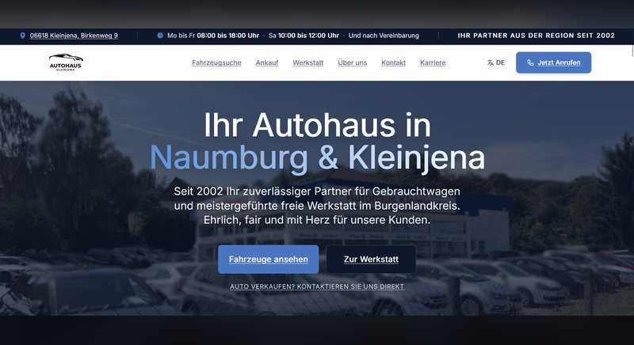
KundenprojektEigenentwicklung der Webseite für Autohaus Kleinjena. Responsives Design, Fahrzeug-Übersicht mit Filterung und ein Formular für Service-Anfragen.
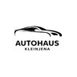
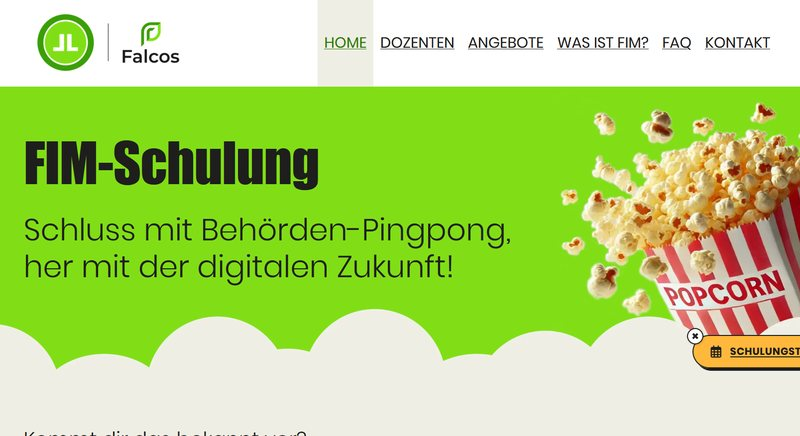
BerufsprojektÜberarbeitung der Schulungsplattform für das Föderale Informationsmanagement (FIM) im Zweierteam. Fokus auf Usability, barrierefreie Kurszugänge und verständliches Lern-UI.
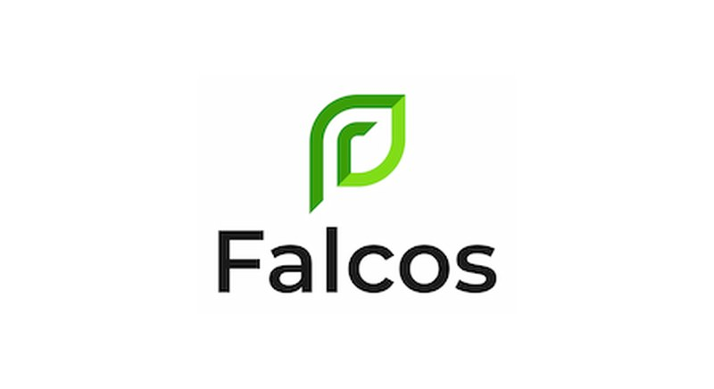
Falcos GmbHEntwicklung automatisierter XÖV-ZUGFeRD Parser zur Reduzierung manueller Erfassungszeiten in Behörden. Full-Stack Webentwicklung mit WordPress, Docusaurus und LLM-Prozessautomatisierung.
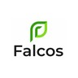
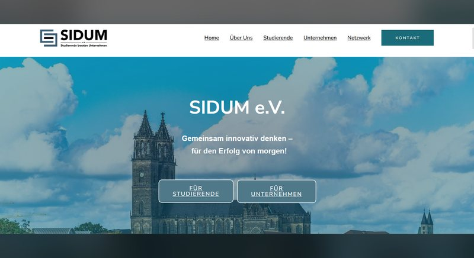
EhrenamtMitarbeit an Kreditentscheidungs-Use-Cases (Expected-Goals-Modell mit d-fine) zur Risiko-Optimierung sowie Absolvierung der PwC GenAI Masterclass.
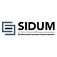
Konstruktion und Bau eines autonomen Mähroboters für die Informatik-Kursarbeit. Sämtliche Kunststoffbauteile im 3D-Druck eigenhändig gefertigt, inklusive eigener Sensorik, Aktorik und digitaler Steuerung.
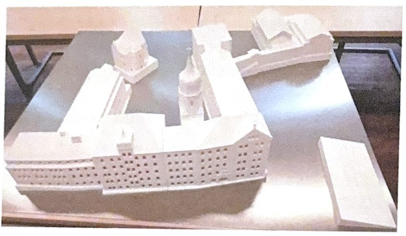
🏆 Sonderpreis DigitalisierungMaßstabsgetreue CAD-Digitalisierung und 3D-Druck des historischen Schulgebäudeensembles CJD Droyßig. Ausgezeichnet mit dem Sonderpreis für Digitalisierung im Juni 2024. Das Modell ist im Paulusraum der Schule ausgestellt.
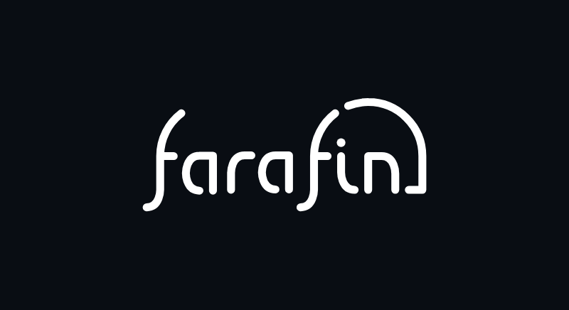
EhrenamtGewählter Stellvertreter, IT-Adminreferat und Event-Leitung für 150+ Erstsemester. Prozessautomatisierung mit n8n & LLMs, Skalierung der internen Knowledge-Base und Betreuung der Fachschafts-IT.
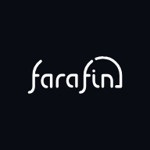
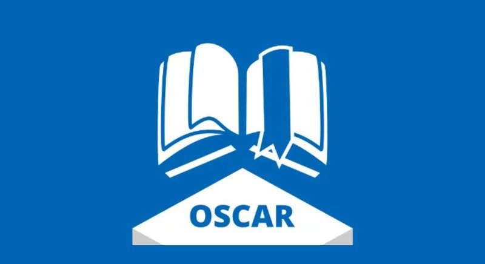
TeamprojektKollaborative Entwicklung eines modularen Semesterplanungs-Bots (Organized Study Choice & Academic Roadmapper) zur Optimierung der Stundenplanerstellung für Informatikstudierende an der OVGU.
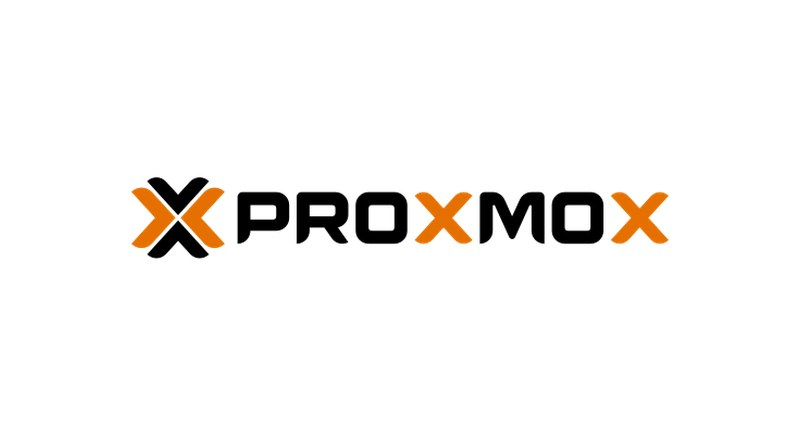
FOSSAufbau und Betrieb eines eigenen Proxmox VE Server-Clusters zur Orchestrierung von Nextcloud, Paperless-ngx Dokumentenarchivierung, n8n-Workflowautomatisierungen und Docker-Containern.
emin@ovgu:~$ help
Wähle einen Befehl aus oder tippe ihn ein:
Optionen: whoami | webseiten | skills | erfahrung | impressum | kontakt | clear
Du möchtest dich vernetzen oder über spannende Software- und Hardwareprojekte sprechen? Schreib mir eine Nachricht!